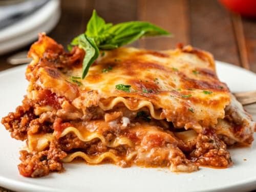

Lasgna

Learn how cook delicious authentic italian lasagna witch bechamel.
Just follow the instryctions to succeed.
Ingredients:
- 12 dry lasagna sheets
- 1 lb mozzarela cheese (shreded)
- 8 oz parmesano cheese (grated)
- 3 tbsp olive oil
- 6 garlics
Instructions:
Now that you have the ingredients, all you need to do is follow the steps below before you can enjoy this delicius meal.
- Prep all the ingredients
- Cover all the dried sheets in hot water for 10 minutes.
- Drain the sheets and place them making one layer
- Put the meat and the tomato sauce on top of the sheets and add a new layer of sheets
- Repeat this process until you have filled the "box"
- Bake in the oven for 45 minutes at 200 celsius